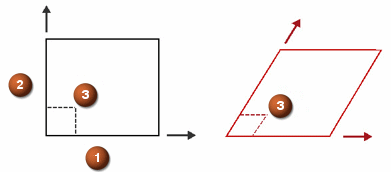

织物求解器
织物求解器为具有两组互成角度的纤维的布料织物计算纤维方向。
-
变形纤维方向由主要对齐设置
-
纬线纤维方向由次要对齐设置
下图显示一块织物上的剪切角度变形，其中纬线纤维角度为 90°。由 1 表示的经线纤维长度和由 2 表示的纬线纤维长度不会更改，但是它们之间的纱线角 (3) 可以更改。

剪切角度 = 原始纱线角 – 变形纱线角
织物层片锁定角度属于材料属性，用于指定纤维可变动的最大剪切量。
软件将比较剪切角度与锁定角度之间的差异。

绿色 — 剪切角度 < 90% 锁定角度
黄色 — 90% 锁定角度 < 剪切角度 < 锁定角度
红色 — 剪切角度 > 锁定角度